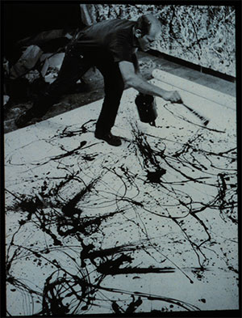
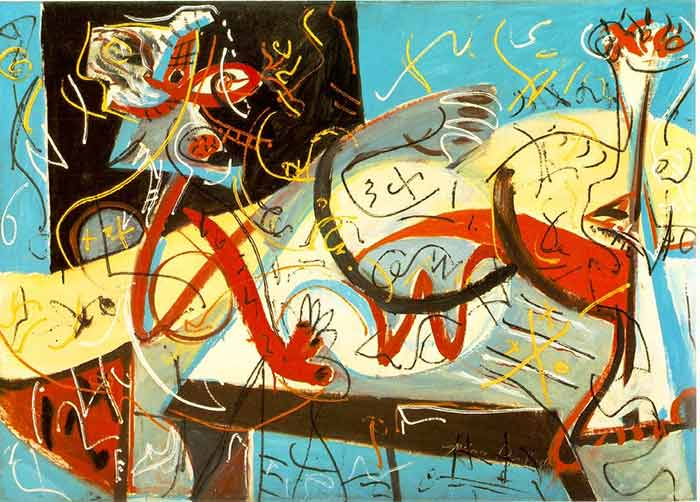
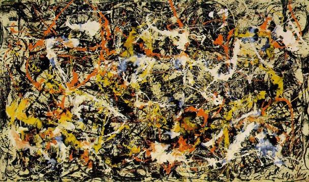

JACKSON POLLOCK
Expressionnisme abstrait

Le surréalisme nous a caressés avec ses virages marginaux. On rencontre à travers le mouvement que les artistes nous partagent leurs rêves et nous avons succombé à leurs réalités. Ils encouragent de nouvelles tendances en créant toute une autre forme de présence. La vague surréaliste pointe une effervescence hétérodoxe. Elle remonte le moral de quelques sortes, conceptualise, catalyse et retrempe son évolution. À travers les années, l'orientation artistique décroche des attirances pour enfin faire place à d'autres énonciations pour exprimer l'art.L'écriture automatique note sans hésitation un idiome utilisé par les psychiatres, les médiums et plusieurs autres.
C'est l'interprétation de la pensée sans aucun respect de l'ordre syntaxique. Une frivole d'émotions sans songer et est rédigé sur papier. L'expressionnisme abstrait s'est déplié dans l'ombre de la seconde Guerre mondiale. Il s'agit de reporter ses réflexions et émotions avec des formes abstraites et des couleurs très diversifiées sur une toile. C'est l'écriture automatique interprétée sur une toile. La peinture se transforme en une sorte d'écriture personnelle de l'artiste en un geste rapide. Jackson Pollock (1912-1956) est l'âme de ce mouvement. On lui donne le sobriquet de Jack the Dripper . Ses techniques de « all-over drip » étaient très singuliers, dérivés et inspirés du travail de l'artiste Max Ernst (1891-1976).

Il a traversé et expérimenté plusieurs phases de mouvements artistiques. Après avoir étudié avec Thomas Hart Benton (1889-1975), il est devenu un artiste figuratif. Ensuite, est devenu un semi-abstractionniste; un surréaliste. Ses inspirations faisaient référence à l'inconscience transposée sur une peinture. En 1947, il développa le « drip painting ». Il est le plus grand peintre américain du XXe siècle. De descendance écossaise et irlandaise, Pollock était le dernier de cinq garçons. Le berceau de ses ouvres s'inspire de la ville de New York. Il est le « street smart » des artistes.

La grande pomme était; son école, son institution, son académie et l'ironie de ses réalisations. Il grandit en ayant une mère autoritaire et un père quasi absent. À onze ans, il visite une réserve indienne. Il est ébloui par les arts primitifs de l'endroit. En 1927, il suit des cours au High School de Riverside avec agonie. Il quitte l'année suivante. Dès l'âge de quinze ans, il montre des signes d'alcoolisme. L'expression de son âme devient alors une forme de refuge d'émotions. La peinture devient alors une délivrance de son univers. Il comprend que sa philosophie de vie n'est nul autre que de partager et propager ses émotions sur une toile. En réalité, c'est l'affirmation mondiale de tous les artistes.